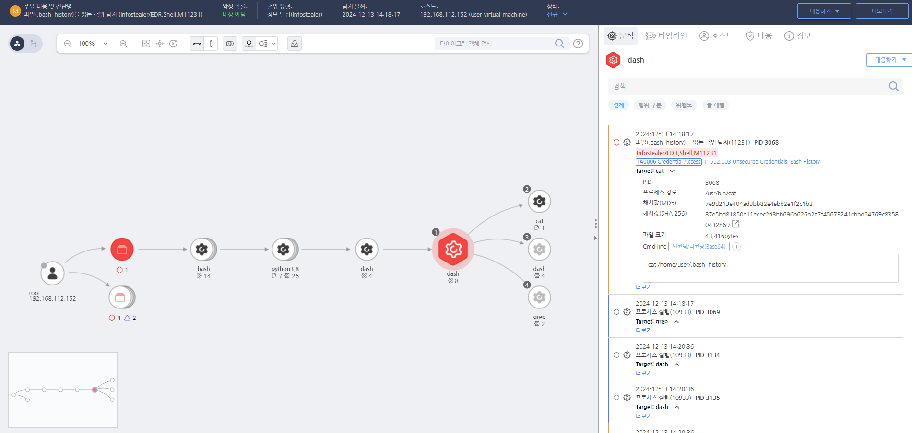

T1552.003.01 bash 히스토리에서 계정 정보 수집
D3FEND
MITRE ATT&CK 액션을 기준으로 대응 방안을 작성
Detection
모니터링을 통해 'bash_history'에 접근하는 프로세스를 확인합니다.
Detection(EDR)

https://172.18.10.125:8903/#/analysis/incident/675bc488002dc79500000d60
Response
노출된 계정의 비밀번호를 변경합니다.
Mitigations
자격 증명 암호화 및 안전한 저장 (M1030 - Credential Dumping Prevention)
- 파일 내 자격 증명을 암호화하여 저장하고, 복호화에 필요한 비밀 키를 보안 저장소(예: 하드웨어 보안 모듈(HSM), 암호화된 비밀 관리 시스템)에 보관
- 자격 증명 관리 시스템을 사용하여 자격 증명이 파일 내에 직접적으로 저장되지 않도록 하고, 자격 증명은 동적으로 로드하여 사용
- 파일 내 자격 증명이 암호화된 채로 저장되도록 보장하며, 암호화된 자격 증명만 허가된 애플리케이션에서 접근하도록 제한
파일 접근 권한 제한 및 모니터링 (M1031 - Network Segmentation)
- 파일에 대한 접근 권한을 최소화하여 자격 증명이 포함된 파일에 불필요한 사용자가 접근할 수 없도록 제한
- 파일 시스템 모니터링을 활성화하여 자격 증명이 저장된 파일에 대한 비정상적인 접근이나 변경을 추적하고 탐지
- 보안 소프트웨어와 파일 시스템 로그를 사용하여 자격 증명 파일에 대한 비정상적인 접근 시도를 모니터링
자격 증명 관리 및 비밀 관리 시스템 도입 (M1040 - Security Configurations)
- AWS Secrets Manager, HashiCorp Vault, Azure Key Vault와 같은 비밀 관리 시스템을 사용하여 자격 증명과 같은 민감한 정보를 파일이 아닌 중앙화된 안전한 위치에서 관리
- 비밀번호 및 API 키와 같은 자격 증명은 비밀 관리 시스템을 통해 애플리케이션이나 서비스에서 자동으로 로드하도록 구성
- 자격 증명이 파일 내에 하드코딩되거나 저장되지 않도록 최소 권한 원칙을 준수하여 중앙화된 자격 증명 관리 체계를 운영
정기적인 보안 검사 및 코드 리뷰 (M1047 - System Logging & Monitoring)
- 정기적인 코드 리뷰 및 보안 감사를 수행하여 자격 증명이 파일 내에 하드코딩되거나 보호되지 않은 형태로 저장되지 않도록 점검
- 정적 분석 도구(SAST)와 동적 분석 도구(DAST)를 사용하여 자격 증명 포함 여부를 자동으로 검토하고 취약점을 사전에 식별
- 보안 점검 프로세스를 통해 파일 내 자격 증명을 저장하는 취약한 코드를 찾아내고 이를 수정
파일 시스템 보안 및 액세스 제어 강화 (M1032 - Application Layer Filtering)
- 파일 시스템 암호화(예: BitLocker, EFS)를 사용하여 파일 내 자격 증명이 노출되지 않도록 보호
- 애플리케이션 실행 환경에서 자격 증명이 포함된 파일에 대한 접근을 최소화하고, 액세스 제어 목록(ACL)을 활용하여 자격 증명 파일에 대한 불필요한 접근을 차단
- 클라우드 환경에서는 IAM 정책을 통해 자격 증명 파일에 대한 접근을 최소화하고, 필요한 서비스나 인스턴스만 자격 증명에 접근하도록 제한
Affected Techniques
Action 실행시 함께 영향을 받는 다른 Techniqes
| D3FEND |
| D3-DQSA Database Query String Analysis |
| D3-PLA Process Lineage Analysis |